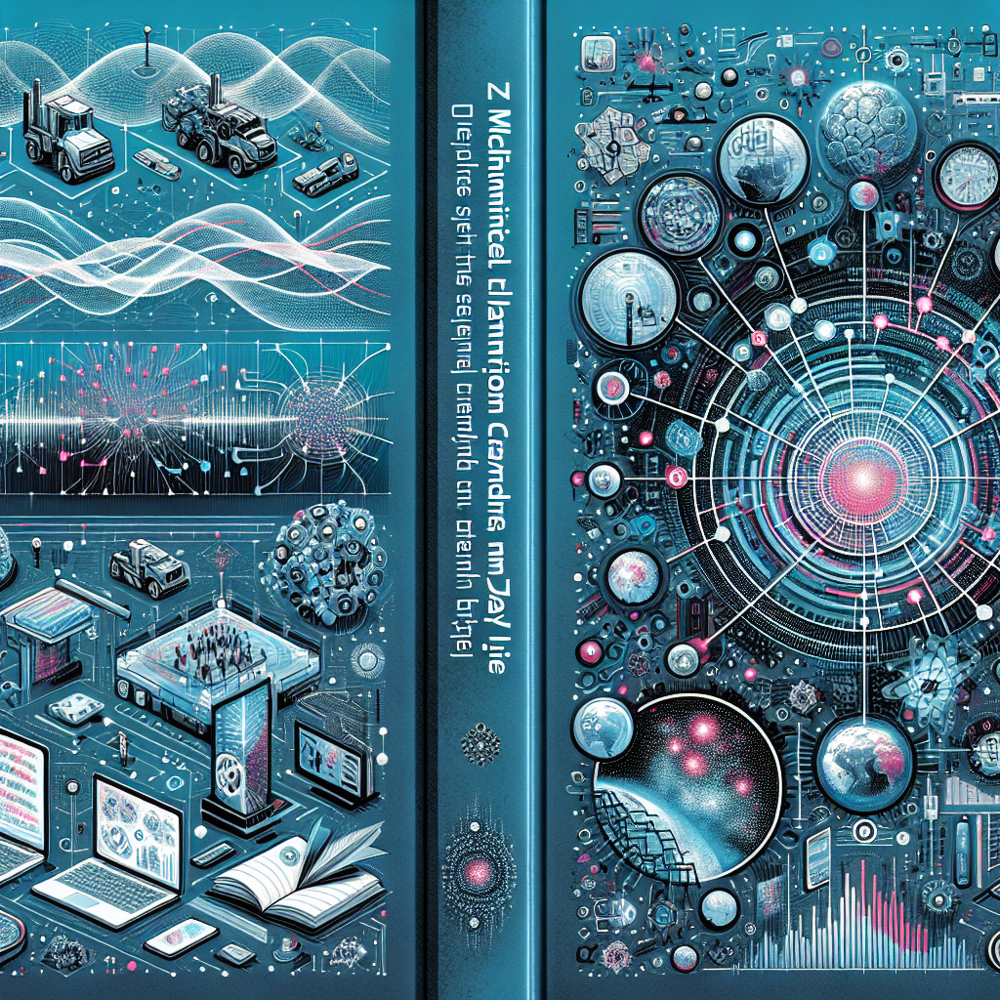
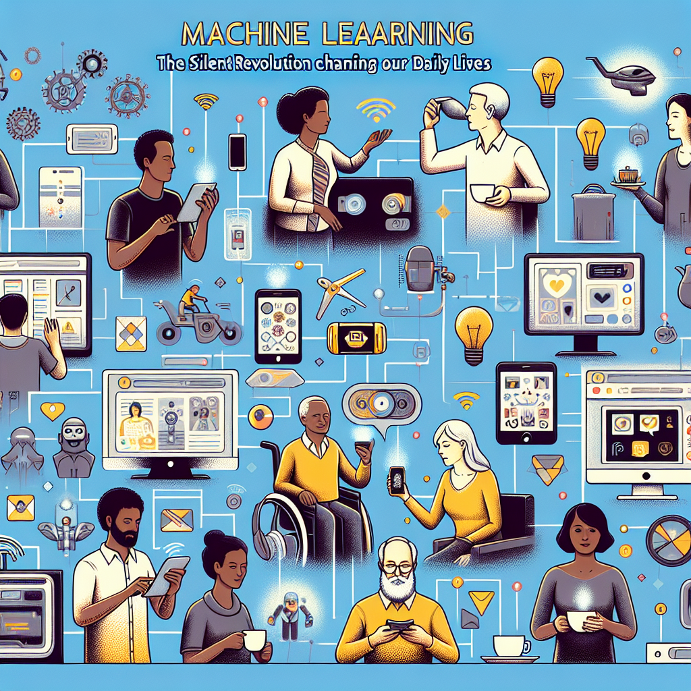
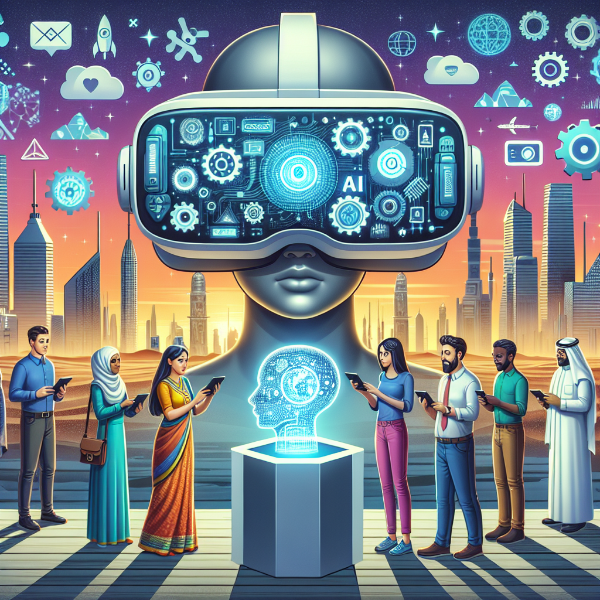

HumanIA
Edición Nº 3 · 19/04/2025

TEMA 1: "La Revolución Silenciosa: Descubre cómo la Inteligencia Artificial modifica sutilmente tu vida diaria."
TEMA 2: "Desbloquea el poder de los datos no estructurados con Deep Learning".
TEMA 3: "Desvelando los avances y aplicaciones revolucionarias en la frontera de la Inteligencia Artificial".
Carta del Editor
Estimado Lector,
Es un verdadero placer darte la bienvenida a nuestra tercera edición. Como siempre, nuestro objetivo es mantenernos en la vanguardia de la exploración del apasionante mundo de la Inteligencia Artificial y la tecnología, con el compromiso de llevar los conocimientos más avanzados en un formato accesible, útil y humano hasta ti.
Comenzamos esta edición con "Machine Learning: La Revolución Silenciosa que Cambia Nuestra Vida Cotidiana". En este artículo, exponemos cómo el aprendizaje automático se ha convertido en una herramienta esencial hasta en los rincones más insospechados de nuestra vida cotidiana. Desde nuestra banca online, pasando por nuestras compras, hasta la forma en que nuestros coches se mueven y nuestros teléfonos nos conectan, el aprendizaje automático está impulsando silenciosamente una revolución profunda y constante en la forma en que interactuamos con nuestro entorno.
Después, profundizamos un poco más con "Deep Learning: Desbloqueando El Potencial De Los Datos No Estructurados". Los datos no estructurados representan una gran parte de la información generada por los humanos, pero su aprovechamiento ha sido un verdadero desafío. Aquí es donde el Deep Learning ha demostrado ser una increíble herramienta de desbloqueo de posibilidades, abriendo nuevos horizontes para la innovación y el descubrimiento.
Finalmente, te invitamos a unirte a nosotros en "Explorando las fronteras de la Inteligencia Artificial: Avances y aplicaciones". Este artículo ofrece una visión de los emocionantes avances que están sucediendo en la vanguardia de la IA, y cómo estas están generando aplicaciones prácticas que pueden tener un impacto directo y significativo en nuestra vida diaria.
Hoy más que nunca, el conocimiento y la comprensión de la tecnología y la IA son fundamentales. Nos enorgullece poder ofrecerte la oportunidad de embarcarte en este viaje de exploración y descubrimiento. En este mundo en constante evolución, debemos recordar que la tecnología, y en particular la IA, no es solo una herramienta para el cambio, sino también una invitación a imaginar y construir un mundo mejor.
Agradezco tu valioso tiempo y tu compromiso con la comprensión profunda de esta revolución tecnológica en curso. Espero que disfrutes de esta edición tanto como nosotros hemos disfrutado creándola. Nos vemos en la próxima frontera de la exploración.
Con todo respeto,
Ricardo Vásquez Silva,
Fund
TEMA 1: 2. "Machine Learning: La Revolución Silenciosa que Cambia Nuestra Vida Cotidiana"

La revolución tecnológica nunca ha sido más palpable que en el presente siglo. Nuestras vidas se transforman continuamente con aparatos electrónicos, aplicaciones inteligentes y avances digitales que han cambiado nuestra forma de interactuar con el mundo. Pero, a pesar de todo el bombo y alarde que suele rodear a los avances tecnológicos, hay una revolución que ha estado ocurriendo de una manera más silenciosa - Machine Learning.
Machine Learning o “aprendizaje automático”, es un subconjunto de la inteligencia artificial y se refiere al proceso en el que una máquina aprende por sí misma a través de algoritmos y modelado de datos, para luego realizar tareas y decisiones específicas sin necesidad de una programación directa. Aunque a muchos de nosotros nos pueda parecer un concepto abstracto y lejano, la realidad es que el machine learning está cambiando nuestra vida cotidiana de formas que ni siquiera notamos.
En términos sencillos, podríamos decir que toda vez que Netflix nos sugiere una lista de películas basada en nuestro historial de visualización o cuando Gmail filtra y categoriza nuestros correos electrónicos, estamos experimentando los beneficios del machine learning. Asimismo, cuando Google Maps nos sugiere la ruta más rápida o menos congestionada, según los datos en tiempo real del tráfico, se está utilizando machine learning. Incluso nuestras interacciones simples con Siri de Apple, Alexa de Amazon, o cualquier otro asistente de voz, se basan en tecnología de aprendizaje automático para interpretar nuestras consultas y proporcionar respuestas relevantes.
Pero no solo eso, la revolución del machine learning se ha infiltrado también en sectores más serios e importantes como la medicina y la banca. Los médicos utilizan tecnologías de aprendizaje automático para identificar patrones en tomografías y radiografías que pueden indicar la presencia de enfermedades. Los bancos y las empresas de inversión, por su parte, utilizan machine learning para analizar grandes cantidades de datos financieros y optimizar las estrategias de inversión.
Resulta impresionante que, a pesar del alcance y la prevalencia de esta revolución silenciosa, muchas personas no tengan plena conciencia de cómo machine learning está remodelando nuestro mundo. Pero solo porque sea silenciosa, no significa que sea menos potente.
El efecto del machine learning en nuestro mundo es profundo y fundamental. Está cambiando no sólo la manera en que interactuamos con la tecnología, sino también cómo la tecnología interactúa con nosotros. Está obligando a las empresas a reconsiderar cómo hacen negocios. Está transformando industrias enteras y, en última instancia, está cambiando nuestra relación con el mundo digital.
A medida que avanzan estas tecnologías, la brecha entre el mundo físico y el mundo digital se va cerrando aún más. Los productos y servicios cada vez son más inteligentes y personalizados; nuestros deseos y necesidades se anticipan antes de que seamos conscientes de ellos; y nuestra vida, en general, se vuelve cada vez más eficiente.
La revolución silenciosa del machine learning es, por tanto, un fenómeno que merece ser destacado y comprendido. Un conocimiento más profundo de su alcance y potencial nos permitirá aprovechar mejor sus beneficios, prepararnos para sus desafíos y participar de una manera más activa en la configuración del mundo digital emergente.
En conclusión, en medio de este avance silencioso pero significativo, el desafío para todos nosotros es abrazar la revolución del machine learning, educarnos sobre sus posibilidades y limitaciones e integrarlo responsable y efectivamente a nuestra vida diaria. Solo entonces, seremos capaces de convertirnos en beneficiarios plenos de esta extraordinaria revolución tecnológica.
TEMA 2: 3. "Deep Learning: Desbloqueando El Potencial De Los Datos No Estructurados"
En nuestra era de la información, los datos son uno de los activos más valiosos. El día a día de la vida moderna genera una gran cantidad de datos. Desde actualizaciones en las redes sociales y correos electrónicos hasta transacciones bancarias y registros médicos, cada aspecto de nuestras vidas está repleto de datos. Sin embargo, la mayoría de estos datos no está en un formato que pueda ser fácilmente procesado y analizado por las técnicas tradicionales de procesamiento de datos. Aquí es donde entra en juego el Deep Learning, abriendo nuevas posibilidades para el manejo y el análisis de datos no estructurados.
Para entender cómo funciona el Deep Learning, es útil conocer qué es exactamente lo que los datos no estructurados representan. En contraposición a los datos estructurados, que se presentan en un formato ordenado y predecible (como una base de datos), los datos no estructurados son aquellos que no siguen un esquema o formato predefinido. Esto incluye textos en lenguaje natural, imágenes, audios, videos y una gama de otros tipos de datos.
El análisis de estos datos no estructurados ha sido un desafío hasta ahora. Las técnicas convencionales de procesamiento de datos han fallado en extraer la riqueza de información que estos datos contienen. Pero el Deep Learning, una rama del aprendizaje automático, tiene el potencial de desbloquear este tesoro oculto de información en nuestros datos no estructurados.
En lo que respecta al Deep Learning, nos referimos a redes neuronales de múltiples capas que imitan la forma en que el cerebro humano procesa la información. Estas redes neuronales se entrenan en grandes conjuntos de datos, aprendiendo a identificar patrones complejos y realizando tareas que van desde el reconocimiento de voz e imágenes hasta la traducción automática de lenguajes y la toma de decisiones sofisticadas.
Con el Deep Learning, es posible analizar y sacarle jugo a los datos no estructurados. Las aplicaciones son innumerables y trascendentales. Por ejemplo, en la medicina, el Deep Learning puede analizar imágenes médicas para detectar tumores o anomalías, algo que previamente requería el ojo entrenado de un especialista en imágenes médicas. En las finanzas, los algoritmos de aprendizaje profundo podrían ser entrenados para detectar patrones en los datos de transacciones para predecir y prevenir el fraude. En el Internet de las Cosas (IoT), el aprendizaje profundo podría permitir que los dispositivos “aprendan” y se adapten a los patrones de comportamiento de los usuarios.
No obstante, vale la pena mencionar que el Deep Learning también tiene sus desafíos. El entrenamiento de las redes neuronales, por ejemplo, requiere una gran cantidad de datos y poder de computación, lo que podría ser prohibitivo para algunas organizaciones. Además, también existen preocupaciones sobre la privacidad y la seguridad de los datos, así como sobre la posibilidad de que los algoritmos de aprendizaje automático recreen y perpetúen los prejuicios humanos en sus decisiones.
En resumen, el Deep Learning tiene un enorme potencial para desbloquear el valor de los datos no estructurados. A medida que seguimos perfeccionando estas tecnologías y abordando sus desafíos, podemos esperar ver aplicaciones cada vez más emocionantes y transformadoras de la inteligencia artificial en el análisis de datos.
TEMA 3: 1. "Explorando las fronteras de la Inteligencia Artificial: Avances y aplicaciones"

La inteligencia artificial (IA) ha demostrado ser una de las tecnologías más innovadoras y potencialmente revolucionarias de nuestro tiempo. Con avances que están redefiniendo los límites tradicionales de la ciencia y la tecnología, la IA se aventura en frentes inexplorados y presenta nuevas vanguardias de innovación y progreso. Ya sea en medicina, finanzas, logística, comunicaciones o entretenimiento, la IA está cambiando nuestras vidas de formas sorprendentes y edificantes. Exploremos, por tanto, las últimas fronteras que la inteligencia artificial está desafiando.
La IA está rompiendo fronteras en el tratamiento y diagnóstico de enfermedades. Los algoritmos de inteligencia artificial se utilizan ahora para identificar patrones que el ojo humano puede pasarse por alto, lo que permite un diagnóstico más rápido y preciso de enfermedades como el cáncer. La IA también puede proporcionar recomendaciones de tratamiento personalizadas que están específicamente diseñadas para adaptarse a las características únicas de un paciente.
En logística y planificación de la cadena de suministro, los sistemas de IA se utilizan para prever la demanda, optimizar el inventario y planificar las rutas de entrega. Esto reduce la incertidumbre, minimiza los costos y mejora la eficiencia de las operaciones. También estamos viendo cómo la IA comienza a utilizarse en la creación de vehículos autónomos de entrega, que pueden navegar de manera independiente y hacer entregas sin la necesidad de un conductor humano.
Incluso en el sector financiero, la IA está transformando la forma en que se llevan a cabo las transacciones y se gestionan los inversores. Los asistentes de IA pueden proporcionar asesoramiento automático y personalizado sobre inversiones, teniendo en cuenta los objetivos, el horizonte temporal y la tolerancia al riesgo del inversor. Como resultado, obtener acceso a servicios de asesoramiento financiero se está convirtiendo en una posibilidad para un número cada vez mayor de personas.
La IA también está cambiando nuestra forma de interactuar con la tecnología. Los asistentes de voz como Siri y Alexa ya son una presencia común en muchos hogares y ofrecen nuevas formas de buscar información, realizar compras y controlar el hogar inteligente. Además, las tecnologías de IA están empezando a influir en la forma en que consumimos medios de comunicación y entretenimiento, desde recomendaciones personalizadas de películas hasta la creación de música y arte generados por ordenador.
Sin embargo, a pesar de estos avances notables y emocionantes, es importante recordar que estamos solo en las primeras etapas de la revolución de la IA. Los desafíos pendientes incluyen la creación de IA que pueda comprender e interactuar con el mundo de una manera que se asemeje más de cerca a la humana, así como abordar las importantes cuestiones éticas y sociales que la IA plantea.
Por tanto, entre las nuevas aplicaciones y los avances recientes, la revolución de la IA está muy lejos de haber terminado. El futuro es incierto, pero también es emocionante, y podemos esperar muchas más innovaciones y descubrimientos en los años venideros. Al contar con mecanismos de regulación sanos y éticos, la IA tiene el potencial de proporcionar beneficios significativos y trascendentales para nuestra sociedad y nuestra vida diaria.
ACTUALIDAD

Noticia: "La compañía de IA OpenAI ha enseñado a un robot cómo escribir su propio software" - CNN Business, Febrero 2022.
OpenAI, una organización de investigación en inteligencia artificial con sede en San Francisco, ha enseñado a un nuevo sistema de inteligencia artificial llamado Codex a seguir las instrucciones escritas en el lenguaje de programación Python. Codex puede interpretar y escribir código por sí mismo, y eventualmente, esperan que sea capaz de redactar su propio software.
Critica: Esto representa un avance sustancial en el campo de la IA. Codex podría acceder a una variedad de industrias y disminuir la dificultad de aprender a codificar para muchos, ya que el sistema podría proporcionar ejemplos de código a los aspirantes a programadores. Esto podría hacer que la programación sea más accesible para las personas que antes no podían aprenderla por diversas limitaciones.
La cuestión crítica aquí radica en las implicaciones éticas y de seguridad. La programación puede ser utilizada para todo, desde crear software benigno hasta la ciberdelincuencia. Asegurarse de que una IA, que puede programar, esté adecuadamente regulada y no caiga en las manos equivocadas es una tarea monumental. Un sistema de inteligencia artificial autónomo, como Codex, plantea serios desafíos en cuanto a seguridad y privacidad, ya que podría ser explotado por actores malintencionados para sus propósitos.
Por otra parte, la automatización del desarrollo del software también genera preocupaciones laborales. Aunque Codex puede aumentar la eficiencia y la productividad, también podría reemplazar algunos puestos de trabajo de programadores humanos. Sin embargo, es importante destacar que la IA no tiene la capacidad de pensar de manera creativa o resolver problemas complejos en la forma en que un humano puede, por lo que los trabajos de programadores aún continuarán siendo relevantes.
En resumen, aunque el desarrollo de Codex y sistemas similares puede ser visto como un avance positivo para la IA y la automatización, es crítico que se proceda con cautela, considerando los factores éticos y los posibles riesgos de seguridad.
Preguntas para ti
Pregunta 1
1. ¿Cuál es el nombre del glitch reconocido en el mundo de la programación que provocó temor de un desastre tecnológico global en el cambio al año 2000?
Pregunta 2
2. ¿Cómo se llama la gama de tecnologías que permite la transmisión de voz y multimedia a través de Internet?
Línea Editorial
Ricardo Vásquez Silva, Ingeniero Civil Industrial, MBA & MIT. Fundador de Transanalytics Data.Email: contacto@transanalyticsdata.com